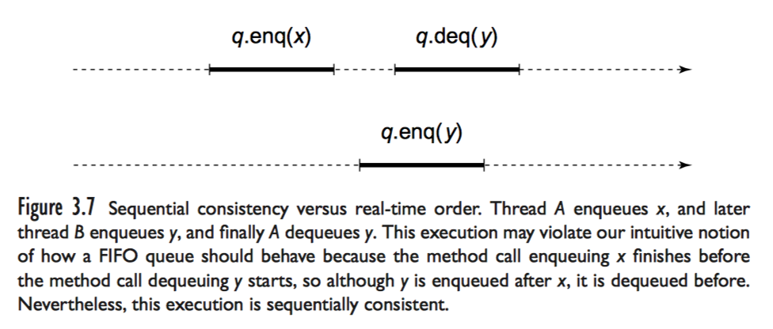
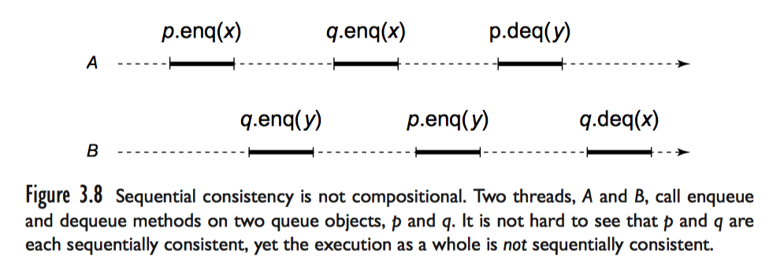

并发编程基础 - 并发对象和一致性模型
本篇介绍并发对象的基本概念，一致性模型和演进性讨论。
Correct me if I’m wrong.
本篇的大部分内容来自 The Art of Multiprocessor Programming Revised 1st Edition。
并发对象的行为可以用 正确性 和 演进性 进行描述。并发对象的正确性是基于某种等价的顺序行为的正确性概念，不同的概念适用于不同的系统。比如，顺序一致性是一种较强的约束限制，通常用于描述类似于硬件存储器接口这样的底层系统，可线性化是一种更强的约束，适用于描述由可线性化组件构成的高层系统。演进性描述一类好的事情最终会发生的性质，也叫活性。比如对锁而言，互斥就是安全性（正确性）特性，而无死锁、无饥饿是活性（演进性）特性。
在 java, c++ 里，对象可以看做是包含数据的容器，每个对象提供一系列方法，只有通过这些方法对对象进行操作。顺序程序的正确性用霍尔逻辑就能很好的描述，大概就是给每个方法加上前后置条件，这也是形式化验证做正确性保证的思路。在顺序执行的情况下，每个方法都可以用霍尔逻辑表达它的 顺序规范。而并发对象可能会处在某种方法调用发生到调用响应之间的中间状态。
顺序一致性
方法调用是需要时间的，方法调用可以看做一段时间间隔，从 调用(invocation) 事件开始，直到 响应(response) 事件结束。如果一个方法调用的 调用 事件发生，对应的响应还没发生，那么当前这个方法调用是 未决(pending) 的。
由于历史原因，一个可进行读写操作的内存位置上的对象叫做寄存器。如果两个线程 A, B 并发地向共享寄存器 r 写入 -3 和 7，初始值为0。一段时间以后，一个线程读 r 结果返回了 -7，这显然是很诡异，不可接受的。我们希望读出来的要么是 -3，要么是 7，而不是 -7 这种凭空产生的值。这就导出了下面这条原则：
Principle 3.3.1. Method calls should appear to happen in a one-at-a-time, sequential order.
这条原则说的是，方法调用从结果上看，应该表现为依次、顺序地发生。这里的顺序是一种全局的全序关系，所有线程可见。
考虑单线程进行操作，r.write(7), r.write(-3), r.read(7)，这也是一种诡异的表现，因为这个线程发生的内存访问顺序违背了程序的顺序执行。这个例子引出了另一条原则：
Principle 3.4.1. Method calls should appear to take effect in program order.
这条原则说的是，方法调用不应该违背程序次序，程序次序就是代码编写时候的先后顺序。原则 3.3.1 和 3.4.1 一起定义了一种正确性特性，称为 顺序一致性。
Lamport 对 顺序一致性 的定义：
A multiprocessor is sequentially consistent if the result of any execution is the same as if the operations of all the processors were executed in some sequential order, and the operations of each individual processor appear in this sequence in the order specified by its program.
顺序一致性要求方法调用的执行行为具有按照 某种 顺序次序执行的效果，并且这种顺序执行的次序不违背程序次序。就是说任意的并发执行中，都存在着一种全序关系，这个全序关系 1. 不违背程序次序，2. 不违背对象的 顺序规范(顺序执行的时候满足的形式化规约，比如队列是 FIFO 的) 。
来看一个满足顺序一致性却违背线性一致性的例子：

注意到在真实时间线上， q.enq(x) 先入队x，且先发生于 q.deq(y)。通过 真实时间 可以知道，q.enq(x) 也先发生于 q.enq(y)。最终观测到 q.deq(y) 了 q.deq(y) 其实说明 y 比 x 先入队，然而这并不违背顺序一致性，因为在顺序一致性的定义里并没有要求不同线程之间存在同步关系，不考虑全局时钟，无需感知到 q.enq(x) 也先发生于 q.enq(y) 这组先发生关系。此时，全序关系为 q.enq(y) --> q.enq(x) --> q.deq(y)。此全序关系不违背两个线程各自的程序次序，且不违背队列 q 的 FIFO 性质。
现代多处理器系统结构中，内存的读写都不是顺序一致的，这些读写操作可以复杂地进行重排序。大多数时候无法察觉，因为大部分的读写操作并不是作为同步操作使用的(线程互相之间不感知，因为没有观察)。在那些程序员需要顺序一致性的特殊情况下，必须显式写代码申请，一般 cpu 都会提供一些特殊指令 (memory fence, memory barrier)，控制处理器按照需求控制内存读写顺序，实现顺序一致性。
顺序一致性是无法复合的，多个顺序一致的对象组合在一起的整体未必是顺序一致的：

单独看 p, q 的行为，都是不违背顺序一致性，然而不存在合适的执行序列使得 A, B 不违背自己的程序次序。
假设存在这样的全序
因为
<p.deq(y) A>，p 是FIFO，所以<p.enq(y) B> —> <p.enq(x) A> —> <p.deq(y) A>
同理，<q.enq(x) A> —> <q.enq(y) B> —> <q.deq(x) B>
在A中，<p.enq(x) A> —> <q.enq(x) A>
在B中，<q.enq(y) B> —> <p.enq(y) B>
所以有<p.enq(y) B> —> <p.enq(x) A> —> <q.enq(x) A> —> <q.enq(y) B> —> <p.enq(y) B>. 出现了环，矛盾。
线性一致性
线性一致性也是分布式经典老番了。顺序一致性不能复合，下面搞点更强的模型。顺序一致性要求方法调用不违背程序次序，用更强的约束条件替换这个要求：
Principle 3.5.1. Each method call should appear to take effect instantaneously at some moment between its invocation and response.
这个原则描述了线性一致性，就是每个方法调用看起来都在它的开始与结束时间中间的某个时间点，原子地完成。非形式化地看，如果并发对象的每次方法调用都可以看做具有与其被调用和响应之间的某个时刻的行为相同的瞬时效果，那么这个并发对象是可线性化的。和顺序一致性类似，也是有一个全局的全序关系，不过这次这个全序关系还和全局时钟有关（在分布式系统里全局时钟是个难题，但是我们可以在讨论性质的时候假设其存在）。
这个理解基本够用了，DDIA 里也大概是这样讲解。下面要整活，讲解形式化定义。
并发系统的一次执行过程可以用 经历(history) 模型来描述，经历是方法的 调用事件 和 响应事件 的有限序列。子经历就是 H 事件序列的子序列。
- 方法的一次调用是
<x.m(a*) A>, x 是对象，m 是方法名，a* 是参数表，A是线程。 - 方法的一次响应是
<x: t(r*) A>, x 是对象，t 是 Ok 或者异常名， r* 是返回值，A 是线程。
如果一次调用和一次响应具有相同的对象和线程，那么他们是 匹配 的。给出方法调用的形式化定义，经历 H 中的一个方法调用是一个二元组，它由 H 中的一个调用和其后第一个且与之匹配的响应构成。在 H 中，如果一个调用没有对应匹配的响应，那么这个调用是未决的 (pending)。
H 的一个 扩展(extension) 是这样的一个经历：对 H 中的0或多个未决调用增加了匹配的响应后构成的经历。有时候可以忽略所有未决调用：$complete(H)$ 是指由 H 中所有匹配 的调用和响应构成的 H 的子序列。
在有些经历中，方法调用相互之间不重叠，如果 H 中的第一个事件是调用事件，除了最后一个事件外， H 中的每个调用都紧随一个与之匹配的响应，则 H 是 顺序 的。(最后一个可以是 pending 的 invocation)。
有时候只需要关心单一线程或者对象。H|x 就是 H 中与对象 x 相关的子序列。H|A 是 H 中与 线程 A 相关的子序列。如果对于任意线程 A，H1|A=H2|A 则 H1 与 H2 等价。
如果 H 中每个线程的子经历都是顺序的，那么 H 是良构 (well formed )的。良构其实就是对每个单一线程来看，方法的调用是顺序发生的，一个方法调用响应前，不会发生其他方法调用。注意，一个 well formed 的 H，每个子线程都是顺序的，但是每个对象未必，因为多线程交织并发地执行。
合法是对顺序经历而言的，如果每个对象的子经历对该对象而言符合其 顺序规范 (比如队列要满足FIFO)，则顺序经历 H 是合法的。
在经历 H 中，如果 m0 的响应事件在 m1 的调用事件之前发生，则 m0 先发生与 m1。
Definition 3.6.1. A history H is linearizable if it has an extension H’ and there is a legal sequential history S such that
L1. complete(H’) is equivalent to S, and
L2. if method call m0 precedes method call m1 in H, then the same is true in S.
We refer to S as a linearization of H. (H may have multiple linearizations.)
翻译一下就是，经历 H 存在一个扩展 H’，构造出一个合法的顺序经历 S：
- 满足 complete(H’) 等价于 S，也就是这俩在每个线程里看，每个事件发生顺序相同。
- 如果在经历 H 里，m0 先发生于 m1，那么在 S 里，m0 先发生于 m1。
H 是可线性化的 S 就是 H 的一个线性化 (H可以有多个线性化)。
可线性化是可复合的
Theorem 3.6.1. H is linearizable if, and only if, for each object x, H|x is linearizable.
演进条件
A method is wait-free if it guarantees that every call finishes its execution in a finite number of steps.
A method is lock-free if it guarantees that infinitely often some method call finishes in a finite number of steps.
如果一个线程的意外延迟会阻碍其他线程继续推进，这样的实现成为阻塞。如果每一次方法调用，都能保证在有限步内完成，这个方法是无等待的。如果无限次方法调用，能确保其中存在部分方法调用能够在有限步完成，那么这个方法是无锁的。相比之下，前面说的 “阻塞” 的实现就可以称作是基于锁的，这里的锁未必是导致线程进入阻塞状态的阻塞锁，也可以是自旋锁。最开始看到无锁编程的算法也会觉得很奇怪，明明拿 CAS 之类的原子操作做了类似于自旋的动作，为什么认为这是无锁的。关键在于是否存在一个（持有互斥锁的）线程，如果该线程的意外延迟（比如错误的锁实现或者操作系统出错导致这个线程意外阻塞却没有释放锁）会阻碍其他线程继续推进，那么这个算法其实是基于锁的。而无锁的算法却可以保证其中至少存在一个线程获得了进展。以队列举例，有 n 个并发线程入队。如果是一个基于锁的算法，那么最终一定是持有锁的线程进行队列数据结构的修改，入队一个元素，然而假设这个线程意外地被抢占，锁没有释放，就会导致该线程没有成功入队数据，其他线程其实是有机会入队的，却因为没有获得锁必须等待。无锁队列却可以保证这 n 个并发线程中，不会因为某个线程的意外延迟导致大家都失败，总体上一定是会有进展的，如果存在线程没有意外延迟，那么一定存在某个线程成功地入队了元素。无等待的要求更苛刻一些，举个例子，每个线程都对一个计数器执行 +1 操作，那么通过原子自增操作可以很简单地做到，每次方法调用都能成功地对计数器 +1，每个线程都取得了进展。
最后
对于一个应用而言，怎样选择演进性条件是取决于需求的。比如频繁调用的实时方法，能做成无等待当然更好了。正确性的选择也取决于需求，比如银行服务器得确保按照程序次序来执行客户请求，这至少得是个顺序一致性吧。股票交易服务器必须是公平的，按照不同顾客到达的先后次序进行服务，所以这需要一个可线性化的队列。
对程序员来说，当然是期望有可线性化且性能良好的硬件和数据结构，然而技术总是不完善的。现代硬件甚至不能保证顺序一致性。具有良好性能且可线性化的数据结构的实现可能性也未可知。所以说并发编程存在很多挑战，学习这个也是很有价值的。
参考资料:
- The Art of Multiprocessor Programming Revised 1st Edition
- Designing Data-Intensive Applications: The Big Ideas Behind Reliable, Scalable, and Maintainable Systems